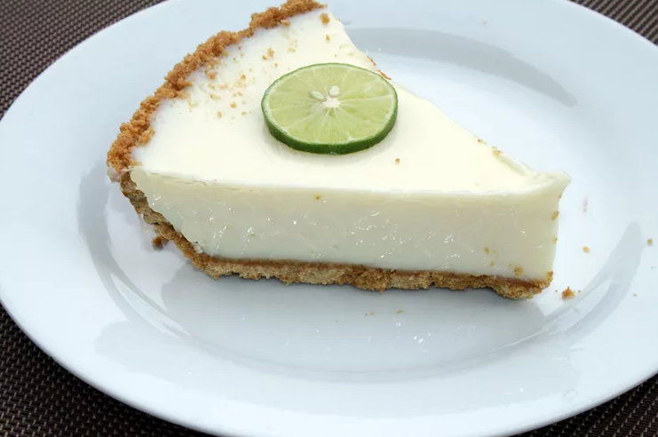

Key Lime Pie

Description
This key lime pie recipe is made with condensed milk and sour cream. Fabulously easy and a summertime favorite! If you have time, a homemade graham cracker crust is better. Garnish with whipped cream and thin slices of lime if you like.
There's nothing like a classic Key lime pie to satisfy your sweet tooth. This sweet, rich, creamy, and tangy Key lime pie recipe is easy to make on a whim with just five easy-to-find ingredients.
Ingredients
- Sweetened condensed milk: This sweet, smooth, and creamy Key lime pie starts with a can of sweetened condensed milk.
- Key lime juice: Key lime juice comes from the Florida Keys. Key limes are more acidic than regular limes, so they pack a flavorful punch.
- Sour cream: Sour cream contributes to the rich texture and lends subtly tangy flavor.
- Lime zest: A tablespoon of lime zest enhances the bold citrus-y flavor.
- Graham cracker crust: Use a store-bought or homemade graham cracker crust.
Steps
Making Key lime pie at home couldn't be easier. You'll find the full, step-by-step recipe below - but here's a brief overview of what you can expect:
- Make the filling: Combine the filling ingredients in a bowl and mix well. Pour into the prepared graham cracker crust.
- Bake the pie: Bake the pie in a preheated oven until tiny bubbles appear and pop on the surface of the pie.
- Cool the pie: Allow the pie to cool on a wire rack, then transfer it to the refrigerator to finish setting. Top with whipped cream and lime wedges, if desired.